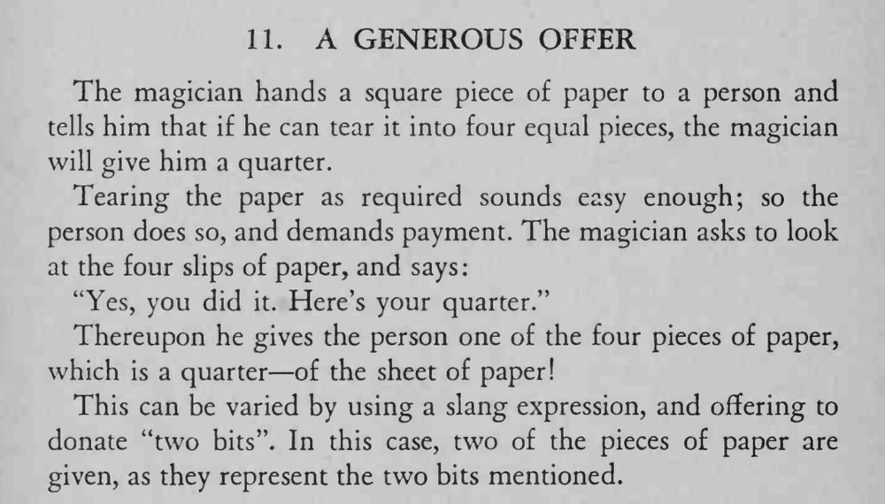

魔术师说谁能把方纸撕成四等份就送他一枚两角五分；对方做到了，拿到的却是一张四分之一大的纸片。
这是谐音文字玩笑，语气要一本正经，别先笑场。

The magician hands a square piece of paper to a person and tells him that if he can tear it into four equal pieces, the magician will give him a quarter. Tearing the paper as required sounds easy enough; so the person does so, and demands payment. The magician asks to look at the four slips of paper, and says: "Yes, you did it. Here's your quarter." Thereupon he gives the person one of the four pieces of paper, which is a quarter of the sheet of paper! This can be varied by using a slang expression, and offering to donate "two bits". In this case, two of the pieces of paper are given, as they represent the two bits mentioned.